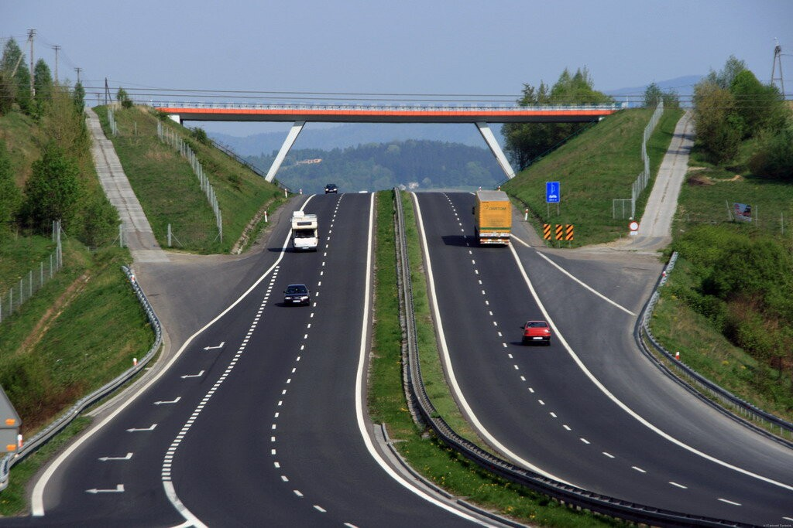

Водій в дорозі

За кермом професіонали далекобійники проводить більшу частину свого часу, для таких людей машина - не тільки робоче місце, але також спальня, і навіть їдальня. І часто, на шкоду своєму здоров'ю, водії жертвують режимом харчування заради своєчасного виконання доставки. Таким чином, дотримання певної системи харчування буде не менш важливим, ніж своєчасна заміна запчастин, заправка бака або встановлення тахографа.
10 основних порад здорового харчування водія-далекобійника:
Перш за все, перед поїздкою з'їжте чайну ложку меду і запийте його склянкою морквяного соку. Такий напій надасть сил і бадьорості.
Перерви між обідом, сніданком і вечерею повинні бути не більше 4-5 годин. Більш тривалі перерви небезпечні для процесу травлення, а надмірна їжа згодом здатна викликати у водія стан сонливості.
М'ясні продукти рекомендується вживати в обід, а рослинну їжу і молочні продукти - на вечерю, не менше ніж за 2 години до сну.
Добова потреба у воді становить 1,5-2 літра, і може змінюватися від пори року, температури всередині кабіни і т.п. Але надмірне питво перевантажує організм рідиною, негативно впливає на роботу серця, в цілому на працездатність. Щоб вгамувати спрагу краще використовувати чай, підкислену або мінеральну воду. Для цих цілей термос в кабіні просто необхідний.
Слід відмовитися від харчування в різних «забігайлівках» і ресторанах швидкого харчування, де немає здорової їжі, а продається виключно фаст-фуд. По можливості, візьміть з собою готові домашні страви, але постарайтеся їх споживати по мірі термінів зберігання.
Вітамін С підвищує працездатність водія, причому доза може бути великою - від 1 до 2 грам. Якщо є можливість вживати в поїздці фрукти - добре, немає - можна обійтися і таблеткою.
У дорозі не рекомендується вживати солоні продукти, наприклад, солоні горішки, чіпси, сухарики тощо. Така їжа викликатиме постійну спрагу, а водієві потрібно бути максимально уважним.
Заздалегідь приготуйте в дорогу пляшку чистої води, краще без газів. Можна також взяти з собою фруктовий компот або натуральний сік, наприклад, апельсиновий або гранатовий, який забезпечить вас енергією на весь день. Корисним буде і чай, особливо в холодну пору року. А ось від кави в дорозі краще відмовитися!
Існує думка, що кава - найкращий напій з тих, які проганяють сон, а тому недосвідчений водій намагається випити максимально міцну каву перед тим, як сісти за кермо. На ділі ж виходить навпаки. Кава дійсно бадьорить, але лише нетривалий час, приблизно на 25 хвилин. Потім на зміну чинному в організмі кофеїну приходить алкалоїд теобромін. Його дія абсолютно протилежна кофеїну, а тому людину дуже швидко починає хилити в сон. Водії-далекобійники називають такий стан «ефект 30-го кілометра», адже саме стільки водій встигає проїхати після випитої чашки кави, а тоді з'являється сонливість. Величезний відсоток аварій у проміжку між 30-м і 50-м кілометром, після чашки цього напою лише підтверджує просту істину - збираючись сісти за кермо, ніколи не пийте кави! Отож, краще випийте ЧАЮ або зробіть пару ковтків холодної ВОДИ, коли потрібно збадьоритися!!!
Водій, який багато часу проводить за кермом і при цьому хотів би підтримувати в нормі стан організму, обов'язково повинен задуматися про придбання сумки-холодильника або холодильника для автомобіля. Такий корисний предмет дозволить брати будь-які продукти з собою в дорогу, а значить, дозволить істотно урізноманітнити ваш раціон.
Якщо є можливість, необхідно через певні проміжки часу зупинятися і виходити з вантажівки, щоб розім’ятися.
Збираючись в далеку дорогу, обов'язково візьміть із собою лікарські препарати. У разі якщо в дорозі у вас виникне печія, запор або розлад шлунка, ці засоби будуть як ніколи до речі.